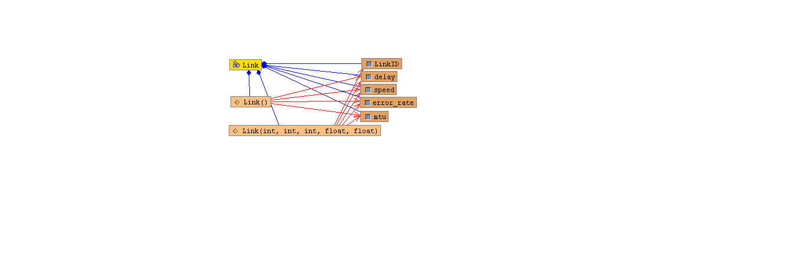

lspsim.Link
lspsim.Link
|
|||||||||
| PREV CLASS NEXT CLASS | FRAMES NO FRAMES | ||||||||
| SUMMARY: NESTED | FIELD | CONSTR | METHOD | DETAIL: FIELD | CONSTR | METHOD | ||||||||
java.lang.Object
public class Link
This class implements the Link data-structure

| Field Summary | |
|---|---|
float |
delay
Delay is the link delay |
float |
error_rate
Error_rate is the link error rate percentage |
int |
LinkID
Link ID is the port number |
int |
mtu
MTU is the link MTU |
int |
speed
Speed is the link speed |
| Constructor Summary | |
|---|---|
Link()
|
|
Link(int ID,
int sp,
int mtu,
float del,
float err)
|
|
| Method Summary |
|---|
| Methods inherited from class java.lang.Object |
|---|
clone, equals, finalize, getClass, hashCode, notify, notifyAll, toString, wait, wait, wait |
| Field Detail |
|---|
public int LinkID
public int speed
public int mtu
public float delay
public float error_rate
| Constructor Detail |
|---|
public Link()
public Link(int ID,
int sp,
int mtu,
float del,
float err)
|
|||||||||
| PREV CLASS NEXT CLASS | FRAMES NO FRAMES | ||||||||
| SUMMARY: NESTED | FIELD | CONSTR | METHOD | DETAIL: FIELD | CONSTR | METHOD | ||||||||